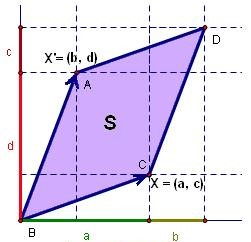
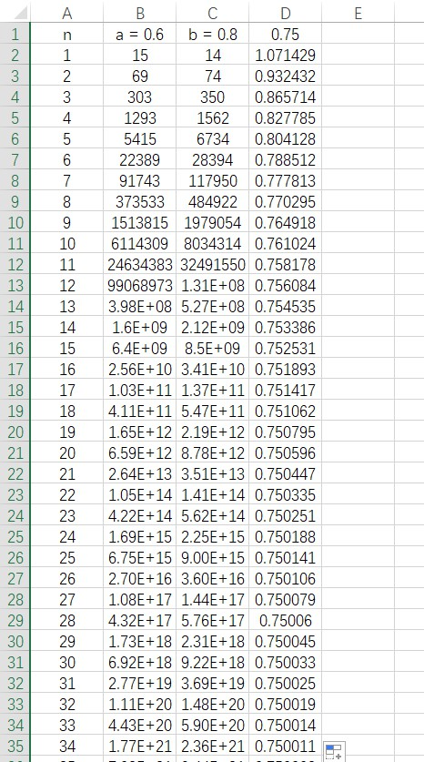
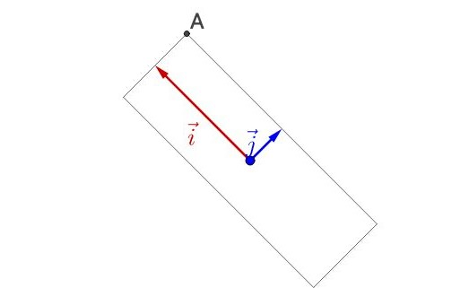
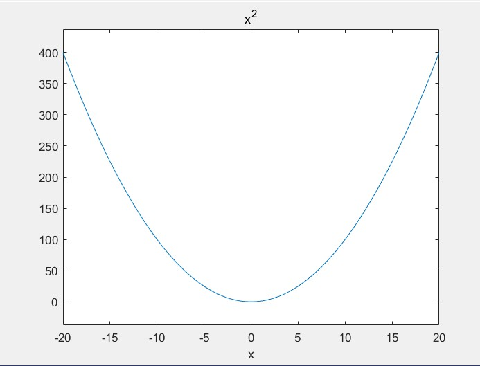
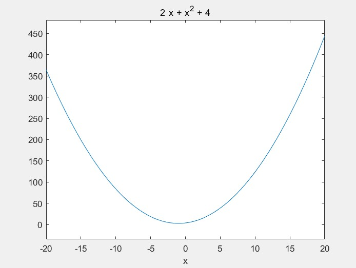
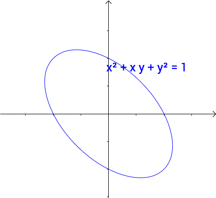
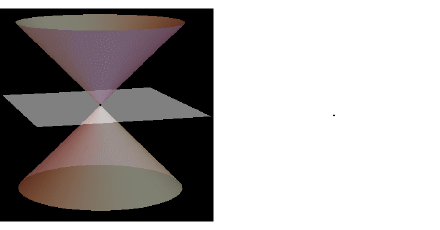

线性代数-矩阵与图形
本文最后更新于：3 个月前
0线性问题
从中学到大学二年级(非数学专业数学公共课基本已经学完了)，我们经常能够见到类似于 $ y = a_1 x_1 + a_2 x_2 + ... + a_n x_n $ 类似形式的多元一次函数，等式的右边是多元一次多项式，左边为函数。这里又有点像回归方程[1]，含义为函数y受多个因变量的影响，且这些影响是线性的；按我个人理解，函数值是关于各个因素的影响之后叠加所得到的结果，在代数领域，我们说这种性质叫做加性。另有多元多次函数，如高中时学习的并且为之白头的椭圆： $ \frac{{{x^2}}}{{{a^2}}} + \frac{{{y^2}}}{{{b^2}}} = 1 $ ，双曲线： $ \frac{{{x^2}}}{{{a^2}}} - \frac{{{y^2}}}{{{b^2}}} = 1 $ 。,因为含自变量或因变量的项的次数总是保持一致，因此在代数上可以认为这是齐性的，同时各项通过'+'号来连接，也认为其具有加性。因此也被认为是线性问题[2]。线性代数顾名思义就是在代数基础上研究其中线性关系的一名科学，也是高等代数学的一部分（数学专业）。
1从行列式和多项式开始
行列式的基本形式为：${\begin{array}{*{20}{c}} {{x_{11}}}&{{x_{12}}}&{...}&{{x_{1n}}}\\ {{x_{21}}}&{{x_{22}}}&{...}&{{x_{2n}}}\\ \vdots & \vdots & \ddots & \vdots \\ {{x_{n1}}}&{{x_{n2}}}&{...}&{{x_{nn}}} \end{array}}$
若令矩阵$A = \left[ {\begin{array}{*{20}{c}} {{x_{11}}}&{{x_{12}}}&{...}&{{x_{1n}}}\\ {{x_{21}}}&{{x_{22}}}&{...}&{{x_{2n}}}\\ \vdots & \vdots & \ddots & \vdots \\ {{x_{n1}}}&{{x_{n2}}}&{...}&{{x_{nn}}} \end{array}} \right]$
则行列式可以表示为： $ det(A) $
行列式是标量，他有一个固定的值，计算行列式的值可以通过：
- 不同行列的所有排列数元素相乘根据逆序数变号，后加总。 $ \det (A) = \sum\limits_{\sigma \in {S_n}} {{\mathop{\rm sgn}} (\sigma )\prod\limits_{i = 1}^n {{a_{i,\sigma (i)}}} } $
- 代数余子式分解计算。
1.1行列式与空间图形
行列式的组成矩阵是由n个n维向量所组成。如最简单的二阶行列式$\left| {\begin{array}{*{20}{c}} a&b\\ c&d \end{array}} \right| $，其构成矩阵可以看作由向量 ${\alpha _1} = {(a,c)^T},{\alpha _2} = {(b,d)^T} $ ， $ [{\alpha _1},{\alpha _2}]$。
将其绘制到二维直角坐标上：如下图所示：

其中向量 $ {\alpha _1},{\alpha _2} $ 所确定的平行四边形的面积，就等于该行列式的绝对值，即： $ S = \left| {\det ({\alpha _1},{\alpha _2})} \right| = \left| {ad - bc} \right| $ 。（可以通过代数方法进行证明）
由上图可以看出：
- 当 $ {\alpha _1},{\alpha _2} $ 成倍数关系时，两个向量共线，同时行列式的值等于零。
- 行列式的值满足加法结合律： $ \det ({\alpha _1} + {\alpha _3},{\alpha _2}) = \det ({\alpha _1},{\alpha _2}) + \det ({\alpha _3},{\alpha _2}) $
同理，三阶行列式的值在坐标系中的意义为三个向量所决定的空间六面体的体积。当有任意两条或全部的向量方向共线时，该六面体的体积为0。
代数中把行列式的几何意义称为在坐标系的线性映射，二阶行列式称为双线性映射，三阶行列式称为三线性映射。[3]
1.2初等变换
对于二阶和三阶行列式来说，计算较为简单。但对于更高阶行列式，计算复杂，因此需要对原行列式进行一些变换，同时不改变行列式的值，使得行列式更为简单（如上三角或下三角行列式）。因此可以将集合的初等变换引入到行列式的变换中。
几何图形可以进行初等变换。几何图形的初等变换的常见类型主要包括：
- 平移变换
- 旋转变换
- 反射变换
- 位似变换
根据线性行列式对几何的映射，可以得出行列式也可以通过一系列的变换，而不改变行列式的值：
- 交换行列式任意两行或两列的位置：行列式的值变号（ $ \det ({\alpha _1},{\alpha _2},{\alpha _3}) = - \det ({\alpha _2},{\alpha _1},{\alpha _3}) $ ）
- 行列式任意一列乘以不为零的数 $ k $ ：行列式的值也乘以该数( $ \det (k{\alpha _1},{\alpha _2},{\alpha _3}) = k\det ({\alpha _1},{\alpha _2},{\alpha _3}) $ )
- 行列式某行或列，加上其他行或列的倍数：行列式的值不变( $ \det ({\alpha _1},{\alpha _2},{\alpha _3}) = \det ({\alpha _1},{\alpha _2},{\alpha _3} + k{\alpha _1}) $ )
2矩阵
矩阵是由m * n个元素排列成m行n列的排列形式。矩阵的每一行或一列都可以看是一个向量，因此矩阵也可以看作等维度向量的集合。
矩阵在运算中是矢量，其每行或每列在运算中也是矢量。
当矩阵的行数等于1时，可以看作为行向量；当矩阵的列数等于1时，可以看作列向量。
矩阵的行数等于列数时，此矩阵也可称为方阵。
2.1矩阵的运算
矩阵乘：m * n 维矩阵A乘以 n * m维矩阵B等于 m * m 维矩阵C，矩阵C中位于 i 行 j 列的元素等于A中第 i 行向量**点乘**B中第 j 列向量。
- 两个矩阵相乘，左侧的矩阵的列数，必须等于右侧矩阵的行数。
- 矩阵乘满足乘法的结合律和分配律，但不满足交换律
矩阵加：两个矩阵相加等于矩阵中对应的每个元素相加。
- 两个矩阵相加，其行数和列数都相同，结果矩阵的行数和列数也相同。
2.2矩阵的转置、逆与伴随
所有的矩阵都可以转置，仿真的转置为方阵元素沿主对角线对称互换，矩阵的维数为 m * n 时转置后的矩阵当矩阵的维数为 m * n 时转置后的矩阵维数为 n * m ，矩阵A的转置记作$ A^T $ 。
只有方阵有伴随矩阵：
设R是一个交换环[4]，A是一个以R中元素为系数的n×n的矩阵。A的伴随矩阵可按如下步骤定义：
定义：A关于第 $ i $ 行第 $ j $ 列的余子式（记作 $ M_ij $ ）是去掉A的第i行第j列之后得到的 $ (n − 1)×(n − 1) $ 矩阵的行列式。
定义：A关于第i行第j列的代数余子式是：
${C}_{ij} =(-1)^{i+j} \mathbf{M}_{ij} $ 。
定义：A的余子矩阵是一个n×n的矩阵C，使得其第i行第j列的元素是A关于第 i 行第 j 列的代数余子式。[5]
基于以上定义，A的伴随矩阵为A的余子矩阵的转置，记作 $ adj(A) $ 。
只有方阵有逆矩阵：
定义：唯一一个方阵B，使方阵A满足： $ AB = BA = E $ ，则B叫做A的逆，记作 $ {(A)^{ - 1}} $
不是所有的方阵都存在逆矩阵，当方阵的秩（2.4节）小于阶数时，方阵没有逆。
$ {(A)^{ - 1}} = \frac{{adj(A)}}{{\det (A)}} $ （这是逆矩阵的第一种常用的求解方法）
2.3矩阵与方程
由 0 节可以得到：矩阵是研究线性问题的一个工具。线性代数的初级阶段只探究最简单的线性问题，这些问题在 0 节中已经列出：多元一次方程和多元二次方程（齐性）。
2.3.1对于多元一次方程：
在每个未知数前都会有一个系数，将其系数提取出来，即组成了一个向量。
而在实际问题中，一般要解线性方程，则需要列出各变量之间的不同的等量关系，形成方程组。由方程组中提取出的系数向量组组合为矩阵。
一般地，要解n元一次线性方程需要列出n个等式方程，因此多元线性方程组所提取的矩阵一般为方阵。
2.3.2对于多元二次方程
对于多元二次函数 $ f({x_1},{x_2},...,{x_n}) = {a_1}x_1^2 + {a_2}x_2^2 + ... + {a_n}x_n^2 $ 来说，提取各变量前的系数，得到$\left[ {\begin{array}{*{20}{c}} {{a_1}}&0&{...}&0\\ 0&{{a_2}}&{...}&0\\ 0&0& \ddots &0\\ 0&0& \cdots &{{a_n}} \end{array}} \right]$。此为二次型的标准型。
二次型将在后面的内容讨论，当前分析 2.3.1 中线性方程组的矩阵问题。
2.4矩阵的秩
方程组有没有解，有多少解都和矩阵的维度和秩的关系相关。因此需要先计算矩阵的秩。
矩阵的秩等于矩阵中不相互共线的行向量或列向量的数量。对于矩阵来说，行秩等于列秩，若矩阵的维度为 m * n，则rank(A) <= min(m,n)。
有n阶矩阵A，当：
rank(A) = n 则 rank(adj(A)) = nrank(A) = n - 1 则 rank(adj(A)) = 1rank(A) < n - 1 则 rank(adj(A)) = 0
可通过伴随矩阵的定义证明，
A的转置的秩等于A的秩。
2.5矩阵的秩和方程的解
从 2.3.1 中可以得到，列写系数矩阵的目的是为了求解线性方程组。一般的线性方程组的形式如下：
$$ \left\{ {\begin{array}{*{20}{c}} {{a_{11}}{x_1} + {a_{12}}{x_2} + ... + {a_{1n}}{x_n} = {y_1}}\\ {{a_{21}}{x_1} + {a_{22}}{x_2} + ... + {a_{2n}}{x_n} = {y_2}}\\ \vdots \\ {{a_{n1}}{x_n} + {a_{n2}}{x_n} + ... + {a_{nn}}{x_n} = {y_n}} \end{array}} \right. $$当等号右侧等于0时，此时是齐次线性方程组，得到：
$$ \left[ {\begin{array}{*{20}{c}} {{a_{11}}}&{{a_{12}}}&{...}&{{a_{1n}}}\\ {{a_{21}}}&{{x_{22}}}&{...}&{{a_{2n}}}\\ \vdots & \vdots & \ddots & \vdots \\ {{a_{n1}}}&{{a_{n2}}}&{...}&{{a_{nn}}} \end{array}} \right] $$当右侧不等于零时，有增广矩阵（将等号另一侧的列加入系数矩阵，使之增广为 n * n + 1 为的矩阵）。
对于齐次线性方程组：
rank(A) = n，有0解。rank(A) < n，有n - rank(A)组基础解（通解）。
对于非齐次线性方程组：
令A为系数矩阵，B为增广矩阵
rank(A) = rank(B) = n，有唯一不为零特解；rank(A) = rank(B) < n，有无穷解；rank(A) < rank(B)，无解。
2.5.1计算齐次线性方程的解
由上文可得，其次线性方程要么有零解（满秩），要么有通解（不满秩）
这里讨论不满秩的情况：
当系数矩阵不满秩时，如：
$$
\left[ {\begin{array}{*{20}{c}}
{a1}&{a2}&{a3}\\
0&{b2}&{b3}\\
0&0&0
\end{array}} \right]
$$
此时无法直接得出不同自变量$X$之间的相互关系，因此需要对某一变量假设其等于0或1。
将假设的变量代入到方程中，即可求解各变量的值如${(1,0,1)^T}$，此时当自变量的值满足：$X = k{(1,0,1)^T}$时，线性方程恒成立，我们称该解向量为方程组的通解。
当存在多组解时，需要取出多个未知数，并将这些未知数逐个取1，其余取0，分别计算此时其他未知数的结果，如：$\begin{array}{l} {X_1} = {k_1}{(3,5,1,0,0)^T}\\ {X_2} = {k_2}{(3,2,0,1,0)^T}\\ {X_3} = {k_3}{(3,4,0,0,1)^T} \end{array}$ （n-r=3）
这些通解的集合叫做解集，也叫做解空间，保留假设变量的值，即不乘以k的解集称作基础解系。
2.5.2非齐次方程组的解
唯一解的情况
由上文可得，非齐次线性方程组有唯一解的充要条件是：系数矩阵的秩等于增广矩阵的秩。
首先可以通过初等行变换，将增广矩阵的系数矩阵变换为行阶梯型，后代入原方程求解，该方法即传统的消元法求解，此处不多赘述。
克莱默法则[9]：
令：系数矩阵为A，等号右侧值为y向量。
定义运算 trans(A, y, i)：
其将A[i]列替换为y，并返回替换后的矩阵A。
则各未知数的解为：${x_i} = \frac{{\det (trans(A,y,i))}}{{\det (A)}}$，该法则为克莱默法则。
根据克莱默法则可以求解出该非齐次方程的解$x*$
克莱默法则的证明：
对于线性方程组：$AX = b$，其中A为系数矩阵（方阵），X为解向量，b为结果向量。
将等式两边同时乘以A的逆：$X = {A^T}b$
由于矩阵的逆唯一，因此解向量的值也唯一。
将矩阵的逆用伴随矩阵表示：$X = {A^T}b = \frac{{A*}}{{|A|}}b$
展开：$X = \frac{{\left[ {\begin{array}{*{20}{c}} {{A_{11}}}&{{A_{21}}}&{...}&{{A_{n1}}}\\ {{A_{12}}}&{{A_{22}}}&{...}&{{A_{n2}}}\\ \vdots & \vdots & \ddots & \vdots \\ {{A_{1n}}}&{{A_{2n}}}&{...}&{{A_{nn}}} \end{array}} \right]\left[ {\begin{array}{*{20}{c}} {{b_1}}\\ {{b_2}}\\ \vdots \\ {{b_n}} \end{array}} \right]}}{{\det (A)}}$
等价于：
通解情况
当增广矩阵的秩等于系数矩阵的秩，且小于未知变量的个数时，此时有通解。
通解的形式：$x = x* + K[X]$，其中：X为基础解系，K为基础解系的系数向量，x*为方程的特解。
方程的特解的求解过程与其次方程组的求解过程类似，需要对部分变量假设为0，然后进行求解。根据方程的解的性质，当未知数的个数减去矩阵的秩大于1时，方程有多个特解，特解的求解方法同其次方程。一般来说只需求出一个特解就OK。
2.6矩阵的左乘和右乘
由于矩阵乘法运算不满足乘法的交换律，因此矩阵的乘法分为左乘和右乘。
左乘的本质上是矩阵的初等行变换，右乘的本质上是矩阵的初等列变换。
如$\left[ {\begin{array}{*{20}{c}} 3&0&0\\ 0&2&0\\ 0&0&1 \end{array}} \right]$左乘矩阵A，其含义是将矩阵第一行所有元素乘以3，第二行所有元素乘以2，第三行不变。等效于1.2节中的初等变换2；
如$\left[ {\begin{array}{*{20}{c}} 0&1&0\\ 1&0&0\\ 0&0&1 \end{array}} \right]$左乘A，其含义是将矩阵的第一行和第二行对调，等效于1.2节中的初等变换1；
如$\left[ {\begin{array}{*{20}{c}} 1&2&0\\ 0&1&0\\ 0&0&1 \end{array}} \right]$左乘A，其含义是将矩阵的第二行乘以2加到第一行，等效于1.2节中的初等变换3。
右乘的是进行列变换，其变换原则与左乘行变换类似。
2.7相似矩阵
定义：存在可逆矩阵P，使得 $ PA{P^{ - 1}} = B $ ，则矩阵A与B相似。
相似矩阵：
- 秩相等
- 特征值相等
2.7.1逆矩阵的初等行变换计算方法
由相似矩阵导出逆矩阵的第二种计算方法：
$ A{A^{ - 1}} = E $ 两边左乘矩阵 $ {A^{ - 1}} $ 得：
$ {A^{ - 1}} = {A^{ - 1}}E $ 表示矩阵A通过 $ {A^{ - 1}} $ 所表示得初等行变换之后得到了单位矩阵，因此等式右侧也要进行 $ {A^{ - 1}} $ 所表示得初等行变换，变换过程与A变换为单位矩阵得过程一致。
导出：可以将单位矩阵增广至矩阵A中，对增广矩阵进行初等行变换，直至增广矩阵左侧变为单位矩阵，则右侧则为 $ {A^{ - 1}} $ 所表示的行变换。
2.7.2对角阵的相似变换（重点）
对于可逆矩阵A，其特征值（2.7）为 $ {\lambda _1},{\lambda _2},...,{\lambda _3} $ ，则其一定相似于主对角线为特征值其他元素为0的矩阵B。且一定存在可逆矩阵P，使得 $ PA{P^{ - 1}} = B $ 。此时矩阵P的每一列向量都为对应特征值的特征向量。
证明：
$ AP = PB $ 假设 $ P = ({\alpha _1},{\alpha _2},...,{\alpha _n}) $ ，则：
$ AP = (A{\alpha _1},A{\alpha _2},...,A{\alpha _n}) = PB = ({\lambda _1}{\alpha _1},{\lambda _2}{\alpha _2},...,{\lambda _n}{\alpha _n}) $ ，
满足特征值和特征向量的定义： $ A\alpha = \lambda \alpha $ 得证。
2.7.3二次型的相似变换（后面再讲，跳过）
2.8特征值和特征向量
定义：对于一个给定的方阵$ A $，它的特征向量（eigenvector，也译固有向量或本征向量）$ v $ 经过这个线性变换[a]之后，得到的新向量仍然与原来的$ v $ 保持在同一条直线上，但其长度或方向也许会改变。即：
$$
Av = \lambda v
$$
此时：$ \lambda $为矩阵A一个特征向量，$ v $为改特征向量对应的特征值。
2.8.1正交基和正交阵
- 定义：一组能在内积空间中组成一个子空间的向量叫做这个子空间的基（ ${\vec e}$ ）。
- 定义：相互正交的基向量叫做正交基 $({{\vec e}_i},{{\vec e}_j})$ 。
- 定义：正交基的数量等于向量的维数时，此时该空间内所有的向量都可以用正交基的线性组合来描述，这些向量的集合称作线性空间的一组标准正交基,也叫单位正交阵 ${{\vec e}_i},{{\vec e}_j},...,{{\vec e}_n}$
- 定义：当A每一列向量相互正交，每列的模都为1，且满足 $ {A^T}A = E $ ，则称该矩阵为单位正交阵。
#### 2.8.2图形中的特征值与特征向量
先从物理的角度说起：物理学中有一些矢量，如力、速度等等。表示这些矢量一般通过使用描述矢量的方向和矢量的大小。同理将特征值与特征向量的组合也可以表示为程度与方向。而这些程度与方向描述的是原矩阵的部分性质。
回到数学问题中来：
先看特征向量，特征向量是一个n维空间中的矢量，其有大小，有方向。将其放在以当前正交基构成的空间中，可以直接用当前的标准正交基E1来线性表示。
根据特征值和特征向量的定义公式和（2.6）节的内容。矩阵左乘特征向量相当于把特征向量进行初等行变换，变换后的向量会等于其原来自身向量的对应特征值的倍数。也就是说，特征向量在经过矩阵A的行变换之后，方向不变。这就是特征值和特征向量方程的几何意义。
#### 2.8.3矩阵的混合
根据（2.6）中的观点，一个矩阵B左乘或右乘另一个矩阵A，可以看作该矩阵B进行矩阵A所表示的初等行变换或列变换。因此，认为一个矩阵可以描述一个变换规律。根据颜色的杂化机理，一个任意的八位色（彩色），可以表示为4个单色：R（红色），G（绿色），B（蓝色），A（透明度）的线性组合（每种单色占两位），比如`#RRGGBBAA = #FFFF0000`表示明黄色（0表示对应颜色的程度最低，F表示最高）。假设我有一个未知颜色，这个颜色只能通过和其他颜色混合来查看结果，让该颜色与蓝色`#RRGGBBAA = #0000ff00`混合，得到靛蓝色。此时还无法判断该颜色是什么，于是在混合颜色中增加该颜色的比重，即与`#RRGGBBAA = #00001100` 进行混合，得到青绿色。因此我们可以判断，该颜色是绿色。
同理，为了凸显矩阵A所描述的变换特征，使用特征值和特征向量来描述矩阵初等变换特征。类比上面的颜色混合机理，一般地在矩阵左乘列向量时，提高矩阵所描述的行变换的比例，可以凸显出矩阵的变换特征。用公式表示为$ \mathop {\lim }\limits_{n - > \infty } {A^n}u = \lambda _{\max }^nkv $（可自行验证，编写程序可以快速计算矩阵的n次幂）
其中，$ \lambda _{\max }^n $为矩阵A的最大特征值，$ v $为特征值对应的特征向量，系数$ k $为放缩比例系数，与矩阵A有关，也与向量$ u $有关。
**得出**，向量左乘一个矩阵的n次幂，向量会因为不断进行相同的初等变换，而达到一个稳定状态，该稳定状态，为矩阵最大特征值所对应的特征向量所在的直线。即对一向量不断进行相同的初等行变换，最终会使得向量的方向逼近改初等行变换的最大特征值对应的特征向量方向。
比如令$ A = \left[ {\begin{array}{*{20}{c}} 6&{ - 1.5}\\ 4&1 \end{array}} \right] $求得特征值为：4， 3，其中4对应的特征向量为：$ {(0.6,0.8)^T} $，随便找个向量：$ u = {(3,2)^T} $。
令$ {\alpha _n} = {A^n}u $
结果如下表：

可见，随着随着n的增大，$ \frac{{{\alpha _{11}}}}{{{\alpha _{21}}}} $向$ \frac{{0.6}}{{0.8}} $收敛，即向量逼近于最大特征值对应的特征向量所在直线收敛。
若矩阵A的最大特征值的小于1大于0时，$ \mathop {\lim }\limits_{n - > \infty } {A^n}u = \lambda _{\max }^nkv - > {(0,0)^T} $。
因此可以通过特征值判断矩阵的幂是否收敛。
2.8.4对角矩阵相似的几何过程
由上矩阵的混合可知。当方阵A满秩时，则一定存在对角阵B，使得$ A = {P^{ - 1}}BP $ 。改推论可以简化计算$ {A^n} = {P^{ - 1}}{B^n}P $，由于B为对角阵，所以计算B的次幂较计算A的次幂较为简单。
前面提到，常用的几何变换有，平移，旋转，和位似。回到2.8.1节正交基的内容，当前空间内任何一个向量都可以表示成为标准正交基的线性组合形式，如$ \alpha = (a,b)^T = a{{\vec e}_i} + b{{\vec e}_j} $。该向量也可以进行旋转和标准正交基方向上的拉伸。这节主要讨论向量的**旋转拉伸**问题。[6] **坐标系的旋转** 当该向量逆时针旋转30度时，其在当前正交基坐标位置变为$ (a\cos \frac{\pi }{6} - b\sin \frac{\pi }{6},a\sin \frac{\pi }{6} + b\cos \frac{\pi }{6}) $。用矩阵表示为：$\left[ {\begin{array}{*{20}{c}} {\cos \frac{\pi }{6}}&{ - \sin \frac{\pi }{6}}\\ {\sin \frac{\pi }{6}}&{\cos \frac{\pi }{6}} \end{array}} \right]{(a,b)^T}$
提取矩阵$\left[ {\begin{array}{*{20}{c}} {\cos \alpha }&{ - \sin \alpha }\\ {\sin \alpha }&{\cos \alpha } \end{array}} \right]$ 可以得到，当该矩阵左乘一个向量时，该向量逆时针旋转 $\alpha$ 角度，若把向量看作不变量，则可以认为将坐标轴顺时针旋转了 $\alpha$ 角度，而初试条件下的坐标系的向量表示可以看作： $\left[ {\begin{array}{*{20}{c}} 1&0\\ 0&1 \end{array}} \right]{(a,b)^T}$ ，即当 $\alpha$等于0的情况。
当坐标系进行旋转时向量的位置不变，因此在旋转后的坐标系其向量坐标发生了变化。但通过计算旋转前后的特征值，发现特征值没有发生变化，但特征向量的坐标也要变换为新的坐标系的坐标表示，但可以发现，特征向量在空间的绝对位置是不变的。
若有一组满秩的方阵A，其并不是两两向量相互正交，但可以通过初等变换和向量标准化变换成标准正交基的形式。该初等变换可利用矩阵的相似变换，来保证变换前后的矩阵特征值不会改变。
同理，上面详细解释了标准正交基经过旋转变换后左乘向量，可以让向量当前的坐标系顺时针旋转相应角度。同理，当该矩阵的逆右乘向量时，表示让向量的坐标系逆时针旋转相应角度。
坐标系的拉伸
如果正交方阵中的向量不满足为单位向量的情况，那么该一定可以写成标准正交基乘以一个对角矩阵的形式。即
如上式所示，矩阵右乘一个对角阵可以将某一列向量乘以对应的元素值。可见，矩阵乘以某一对角矩阵则是对该矩阵的对应列进行拉伸。
回回到2.8.2节中：任意向量都可以用该空间的标准正交基线性表示，而用标准正交基乘以对角矩阵可以将正交基某列进行相应拉伸，通过坐标轴旋转可以将向量的方向与标准正交基中某个基向量方向重合，因此要得到该向量只需将对应的正交基拉伸，后旋转回到原位。
对于满秩方阵A来说，A可以看作是相互线性无关的列向量的集合。相互线性无关的向量数量可以作为空间图形的映射，如秩为2的二阶矩阵映射一个平行四边形，秩为3的三阶矩阵映射一个六面体；若三阶矩阵的秩为2，则其只在空间中某一平面映射一个平行四边形，性质同秩为2的二阶矩阵。因此对于满秩矩阵来说，其一定可以通过旋转将其所有的特征向量转至与该空间的一组标准正交基的方向重合。

对于公式：$ A{\rm{ = }}{P^{ - 1}}BP{\rm{ = }}E{P^{ - 1}}BP $，当B为对角阵，P为标准正交基时，从其图形的角度来看，可以看作先将单位矩阵代表的正交基旋转至指定方向，后根据矩阵B指定的拉伸方向对标准正交基进行拉伸，最后将坐标系旋转回去，就获得了矩阵A。2.7.2中证明了此时P为A的特征向量矩阵之一，即A的特征向量来自于该组正交基，A的特征值为该组正交基获得A向量的拉伸大小。
因此回顾相似矩阵的概念：$ A{\rm{ = }}{P^{ - 1}}BP $，其本质上是一个正交基经过旋转，拉伸，再旋转回去，然后就形成了一个矩阵。相似矩阵在绝对坐标下表示的是同一个矩阵，其区别在于在不同的标准正交基下导致矩阵中各向量的坐标也不同。
当方阵有的特征值各不相同时，其对应的特征向量，满足正交；方阵有重复特征值时，计算得到的两组特征向量可能不正交，因此需要将各个矩阵进行正交化：[7]
施密特(Schmidt)方法
3二次型
在多次的线性关系中，次数更高往往决定这个函数的更多性质，比如对于最简单的一元二次函数：$ y = x ^ 2 $，其图像如下图所示：

给该函数增加一次项或常数：$ y = x^2 + 2x + 4 $，图像如下图所示：

同理，对于更高次的多项式，函数图像的形状往往只由最高次决定。高等代数中使用二次型，来研究二次函数。[8]
3.1二次型的平移与旋转
下面从简单的圆锥曲线来入手二次型：
对于椭圆：$ x ^ 2 + xy + y ^2 = 1 $ 其图像如下图所示：

可以明显看出该椭圆是标准椭圆曲线绕原点旋转而成。根据矩阵的运算过程，该二次方程可以写成：
$$ (x,y)\left[ {\begin{array}{*{20}{c}} {\rm{1}}&{{\rm{0}}{\rm{.5}}}\\ {{\rm{0}}{\rm{.5}}}&{\rm{1}} \end{array}} \right]\left( {\begin{array}{*{20}{c}} x\\ y \end{array}} \right) = 1 $$若令：
$$ \begin{array}{l} X = {(x,y)^T}\\ A = \left[ {\begin{array}{*{20}{c}} {\rm{1}}&{{\rm{0}}{\rm{.5}}}\\ {{\rm{0}}{\rm{.5}}}&{\rm{1}} \end{array}} \right] \end{array} $$则该表达式可以表示为：$ {X^T}AX $
3.2二元二次型的规范化
根据2.8.4节中明确的矩阵的几何过程的定义，提取该系数矩阵的特征值为：0.5和1.5，得到特征向量：$ {( - \frac{{\sqrt 2 }}{2},\frac{{\sqrt 2 }}{2})^T},{(\frac{{\sqrt 2 }}{2},\frac{{\sqrt 2 }}{2})^T} $
当前计算的特征向量为单位向量，将其组成正交基，令
$$ \begin{array}{l} P = \left[ {\begin{array}{*{20}{c}} { - \frac{{\sqrt 2 }}{2}}&{\frac{{\sqrt 2 }}{2}}\\ {\frac{{\sqrt 2 }}{2}}&{\frac{{\sqrt 2 }}{2}} \end{array}} \right]\\ B = \left[ {\begin{array}{*{20}{c}} {0.5}&0\\ 0&{1.5} \end{array}} \right] \end{array} $$则$ A = PB{P^{ - 1}} $
根据2.8.4节结论，可得该图形先是经过坐标轴先顺时针旋转45°，再对坐标轴进行拉伸变换，最后将坐标轴逆时针旋转，最终得到了如图所示的图形。且原图形与坐标轴旋转后的图像的空间绝对位置不变，即，矩阵B也可作为在指定的坐标系下该椭圆图形的二次型矩阵。从矩阵A到矩阵B的过程叫做二次型的规范化，其实质是将矩阵A表示为其特征值经过初等变换的形式。
规范化后的表达式为：$\begin{array}{l} (x,y)\left[ {\begin{array}{*{20}{c}} {{\rm{0}}{\rm{.5}}}&{\rm{0}}\\ {\rm{0}}&{1.5} \end{array}} \right]\left( {\begin{array}{*{20}{c}} x\\ y \end{array}} \right)\\ = 0.5{x^2} + 1.5{y^2} = 1 \end{array}$

3.3多元二次型的规范化
对于多元的二次函数，同样经过以下步骤将其规范化：
- 列写函数的二次型对称矩阵
- 计算特征值
- 将特征值整理成规范化矩阵
- 将变量分别左乘和右乘规范化矩阵
3.4二次型函数的符号性质
前面讲了二次型矩阵的来源与表示方式，二次型方程等号的一侧是未知数变量，等号的另一侧是常数。
二次型函数与二次型函数类似，但其右侧为因变量函数值，即：
- 定义：在多维空间中，使得函数值取正或负的所有坐标轴交叉形成的面的集合为0面。
则对于二次型函数来说，零面与函数值有以下关系：
- 函数图像均在0面以上，只有个别特殊点函数值等于0，则$ f(x) $为正定二次型函数
- 函数图像均在0面以上，但图像与0面有交线，或有无穷个点使得函数值等于0，则$ f(x) $为半正定二次型函数
- 函数图像均在0面以下，只有个别特殊点函数值等于0，则$ f(x) $为负定二次型函数
- 函数图像均在0面以下，但图像与0面有交线，或有无穷个点使得函数值等于0，则$ f(x) $为半负定二次型函数
- 当函数值在0面任意上下时，称$ f(x) $为不定二次型
将其映射到特征值的性质来看，当坐标轴任意旋转时，坐标轴的拉伸不为负，可得到函数值将大于等于0。根据此结论：
- 当二次型矩阵特征值均大于0，则$ f(x) $为正定二次型函数，二次型矩阵为正定矩阵
- 当二次型矩阵特征值均大于等于0，且至少存在1个0，则$ f(x) $为半正定二次型函数，二次型矩阵为半正定矩阵
- 当二次型矩阵特征值均小于0，则$ f(x) $为正负定二次型函数，二次型矩阵为负定矩阵
- 当二次型矩阵特征值均小于等于0，且至少存在1个0，则$ f(x) $为半负定二次型函数，二次型矩阵为半负定矩阵
- 当二次型矩阵特征值有正有负，则$ f(x) $为不定二次型，二次型矩阵为不定矩阵。
相关资料
本博客所有文章除特别声明外，均采用 CC BY-SA 4.0 协议 ，转载请注明出处！